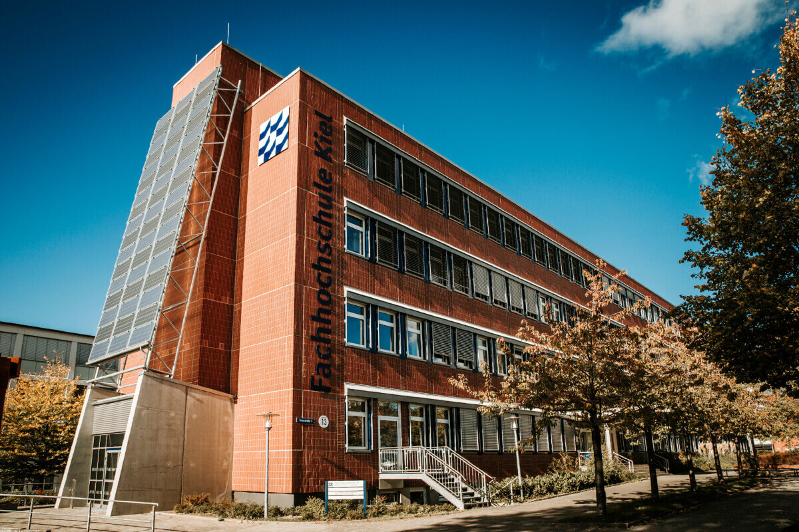

Warum die Fachhochschule Kiel?
Praxisnah studieren an einem der modernsten Campus Deutschlands. International vernetzt, innovativ, weltoffen – werde Teil unserer Community!
Karrierechancen
Top-Ausbildung für deinen erfolgreichen Start in Unternehmen weltweit.
Campusleben
Moderne Lernräume, vielfältige Freizeitangebote und ein wunderschöner Standort direkt an der Kieler Förde.
Internationalität
Erlebe Auslandserfahrungen mit unseren Erasmus-Partnerhochschulen weltweit.

Campusleben
Unser Campus bietet moderne Lernumgebungen und eine tolle Lage an der Schwentine.

Internationales Programm
Studieren weltweit mit unseren Erasmus-Partnerschaften und dem Internationalen Zentrum in Kiel.
Karrierechancen
Top-Ausbildung für deinen erfolgreichen Start in Unternehmen weltweit. Besuche unsere Karriere-Events und starte durch!
Fragen & Antworten zum Studium
Über unser Onlineformular auf dieser Website. Zeugnisse und Lebenslauf hochladen – fertig!
Allgemeine Hochschulreife oder Fachhochschulreife. Teilweise Sprachkenntnisse je nach Studiengang nötig.
Ja! Über Erasmus kannst du ein oder zwei Semester an einer unserer Partnerhochschulen verbringen.
An der FH Kiel fällt nur ein Semesterbeitrag an, keine zusätzlichen Studiengebühren!
Technik, Wirtschaft, Sozialwesen, Medien, Agrarwirtschaft – und viele mehr!
Für das Wintersemester meist bis 15. Juli, für das Sommersemester bis 15. Januar.
Ja, wir bieten verschiedene duale Studiengänge in Kooperation mit Unternehmen an.